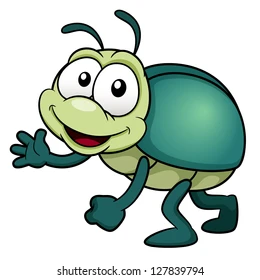
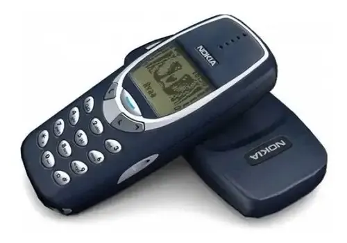

Curiosidades
O primeiro "Bug" de computador foi um inseto literal: O termo "bug" (inseto, em inglês) é usado hoje para falhas de sistema. A origem? Em 1947, a brilhante cientista da computação Grace Hopper e sua equipe encontraram uma mariposa real presa nos circuitos de um dos primeiros computadores (o Mark II), o que estava causando um erro na máquina. Eles colaram o inseto no diário de bordo com a anotação: "Primeiro caso real de bug encontrado".

A primeira webcam foi criada por causa de café: Em 1991, pesquisadores da Universidade de Cambridge estavam cansados de sair de suas mesas, descer as escadas e encontrar a garrafa de café vazia. Para resolver isso, improvisaram uma câmera que tirava uma foto da cafeteira três vezes por minuto e enviava para a rede interna.
A roda não foi inventada para o transporte: Acredite se quiser, as primeiras rodas (criadas na Mesopotâmia por volta de 3.500 a.C.) eram usadas na horizontal como base para moldar vasos de argila (a roda de oleiro). Só cerca de 300 anos depois é que alguém teve a brilhante ideia de virá-las de lado e acoplá-las em uma carroça!


O primeiro celular era um verdadeiro tijolo: A primeira ligação de um telefone totalmente móvel foi feita em 1973. O aparelho pesava mais de 1 kg, tinha 25 centímetros de altura, levava cerca de 10 horas para carregar e a bateria só durava meros 30 minutos de conversa.